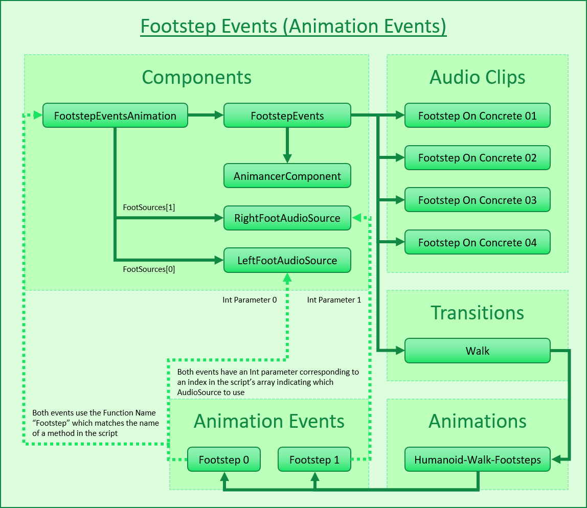
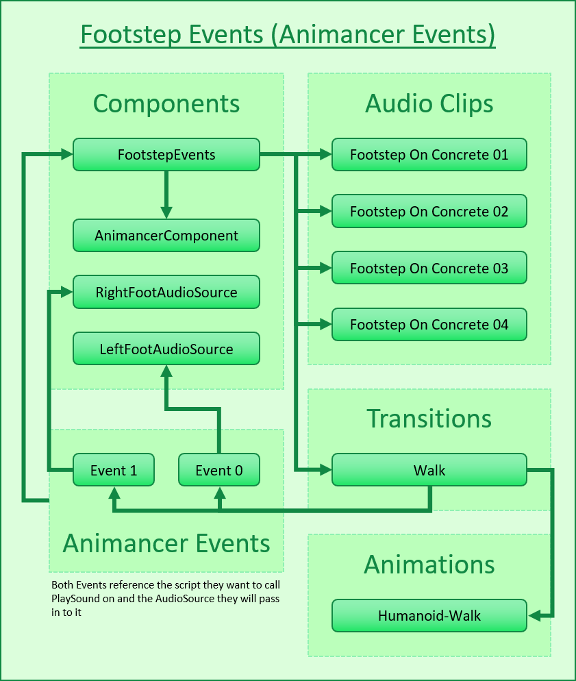

It is often necessary to do things at a certain time during an animation, for example:
- Footstep Events: play a footstep sound each time a foot touches the ground during a walk animation.
- Golf Events: hit a golf ball when your swing passes a certain point.
You could script these things using coroutines or other timers, but using Unity's inbuilt Animation Events or Animancer's custom event system allows you to preview the animation while configuring events so you can easily configure the exact timing you want. The following table summarises the differences between the two event systems.
| Animation Events | Animancer Events |
|---|---|
| Built into Unity. They work the same with Animancer as without it. | Animancer Lite allows you to try out Animancer Events in the Unity Editor, but they won't be available in Runtime Builds unless you purchase Animancer Pro. |
How to use:
|
How to use:
|
|  |  |
Animation Events are defined as part of an AnimationClip so every state using that clip will have the same events. |
Animancer Events are defined separately from the AnimationClip so you can use different sets of events for the same animation. If you want to share a set of events, you can simply define them in a shared location such as by using a Transition Asset. |
Each Animation Event calls one method which must be located in a component on the same GameObject as the Animator. |
By default, UnityEvents are used to configure Animancer Events in the Inspector so they can call methods on any object they can reference and each event can call as many methods as you want. |
The method can be private if you don't want other scripts to call it manually. |
UnityEvents can only call public methods. But the system can be set to use UltEvents instead, which supports private and even static methods (full comparison here. |
The method can have at most one parameter of any of the following types: float, int, string, anything derived from UnityEngine.Object, or AnimationEvent which contains one of each of the other types as well as several other details. |
UltEvents can call methods with any number of parameters of all the above types as well as: Enum (regular and flags), Vector (2, 3, 4), Quaternion, Rect, Color, and Color32. They can also call one method and use its return value as a parameter for another method.
|
Animation Events aren't very efficient because they use a mechanism similar to GameObject.SendMessage and if the event has a string or AnimationEvent parameter, it will create some Garbage every time it is triggered which can potentially cause performance issues. |
Animancer Events are much more efficient because they use C# Delegates. Animancer Events configured in the Inspector usingUnityEvents don't allocate Garbage. UltEvents don't usually do so either, except in certain circumstances such as when a method returns a value type (UnityEvents simply wouldn't be able to call such a method though). |
Animation Events can be added using code, but they are still subject to all the above limitations. If you are using an Animator Controller, you don't even have access to the AnimationClip of a particular state until it's already playing. |
Animancer Events can be added using Delegates. For example: state.Events.Add(0.5f, () => Debug.Log("Event Triggered"));. |
| Methods are referenced using Magic Strings. Newer Unity versions use a dropdown menu to select the method instead of a text field to enter the name manually, but once selected the name is still stored as a string so if the method is renamed the Animation Event will not be automatically updated to reference the new name. | UnityEvents and UltEvents use strings just like Animation Events when you configure them in the Inspector, but when adding Animancer Events using code there are no strings involved. It can even be useful to configure the event times in the Inspector so you can preview what the model looks like at that time, but leave the actual event blank and set it up using code. |
| There are several Known Bugs in the Animation Events system which can only be fixed by waiting for Unity to address them and release a new version. | There are currently no known bugs in the Animancer Events system and any that are found can generally be fixed fairly quickly. Having the source code of Animancer Pro also means you can potentially fix and change things yourself if you need to. |
| Animation Events | Unity's inbuilt Animation Event system. |
| Animancer Events | Animancer's custom event system. |
| End Events | A special Animancer Event specifically for ending the animation (usually by playing something else). |